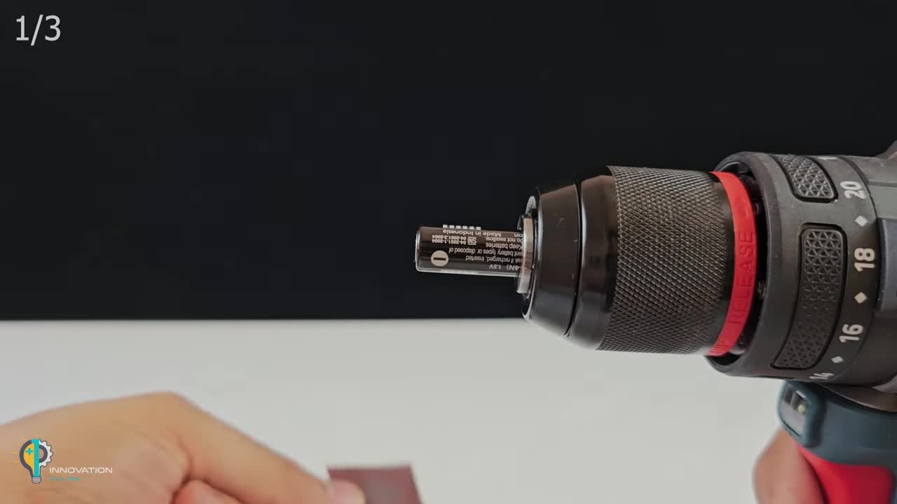
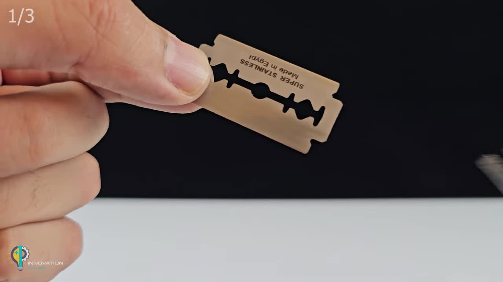
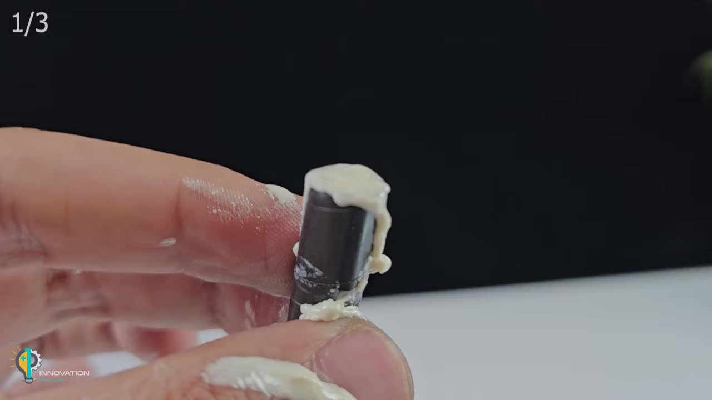
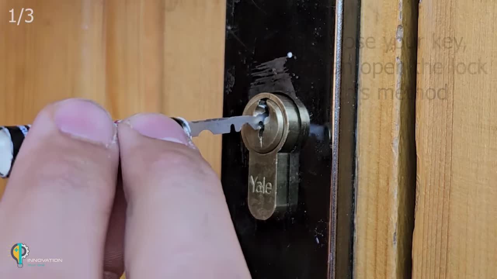
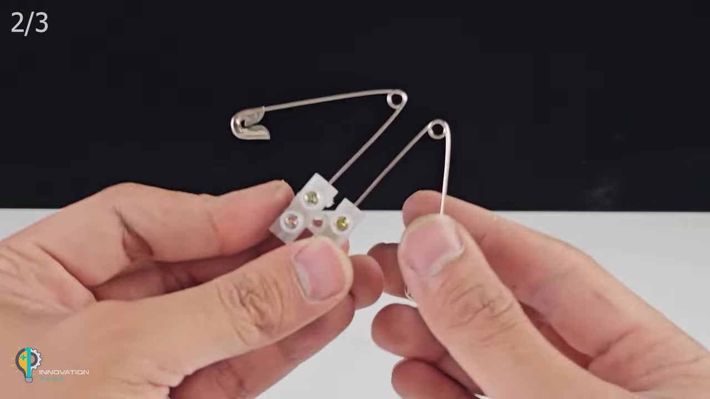
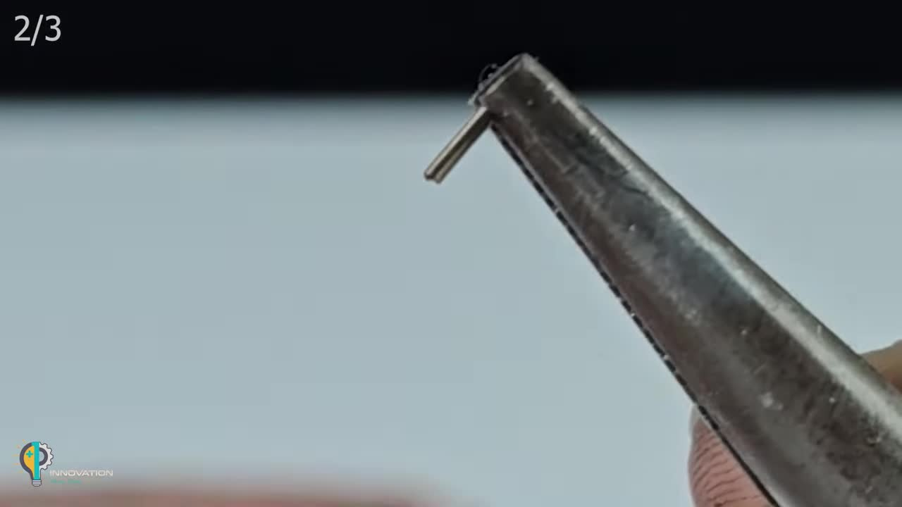
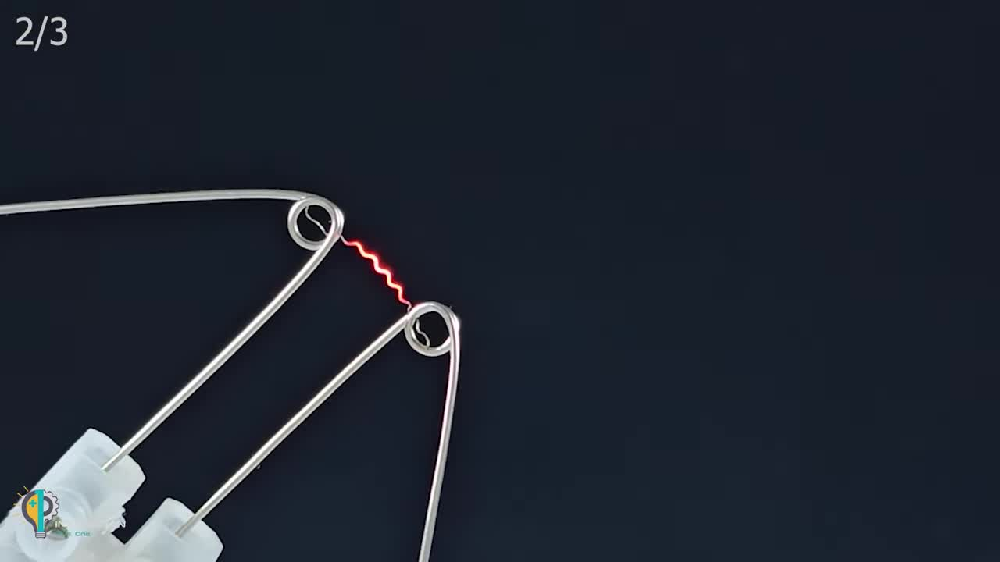
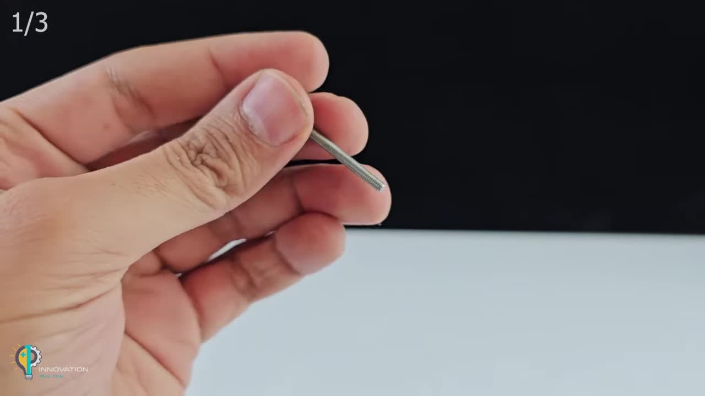
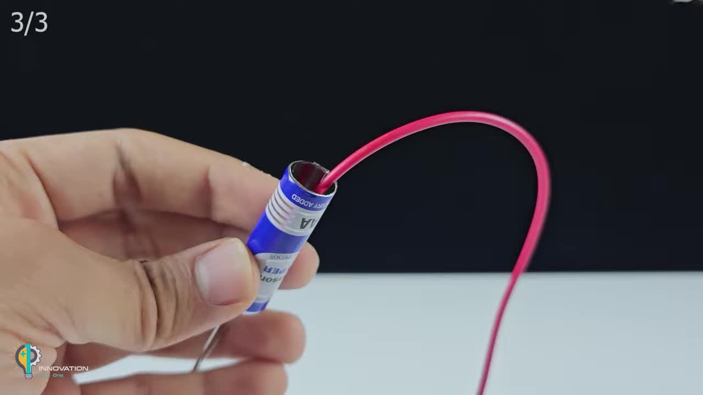
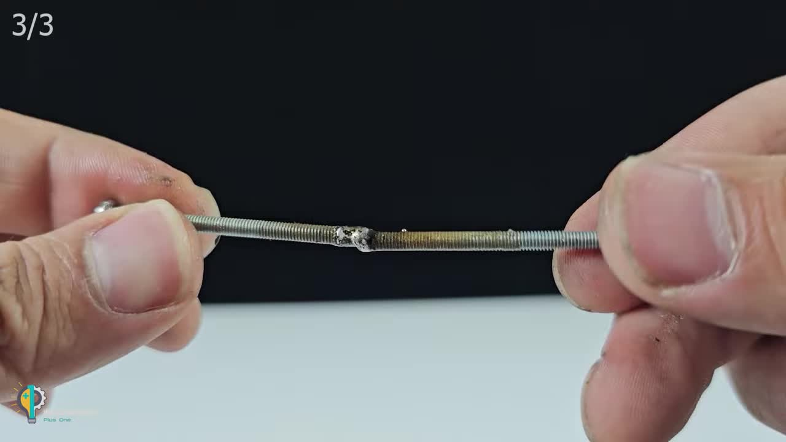

Infinite Creativity
Make Three Practical Tools from Batteries and Everyday Items!
在紧急情况下，巧妙利用身边物品制作工具能够帮助你解决大问题。本教程将带你探索如何将普通的电池和一些简单材料，转化为三款令人惊叹的实用工具。 In emergencies, cleverly using everyday items to create tools can help you solve big problems. This tutorial will guide you through transforming ordinary batteries and simple materials into three amazing and practical tools.
安全提示： 制作和使用这些工具时请务必小心。某些步骤涉及尖锐或高温部件，儿童应在成人监督下操作。对任何潜在危险请自行承担责任。 Safety Notice: Please exercise extreme caution when making and using these tools. Some steps involve sharp or hot components. Children should operate under adult supervision. You are solely responsible for any potential hazards.
Emergency Lock Picker
通过巧妙改造废旧电池和剃须刀片，你可以制作一个在紧急情况下帮助你开锁的工具。 By ingeniously repurposing an old battery and a razor blade, you can create a tool that might help you open locks in an emergency.
1. 电池打磨与塑形 (Battery Grinding and Shaping)
将AAA电池（松下NEO AAA电池，1.5V）的一端用电钻固定并配合砂纸进行打磨，去除电池表面的塑料涂层，露出金属表面。然后用电工胶带缠绕打磨后的电池，形成一个可以持握的手柄。 Secure one end of the AAA battery (Panasonic NEO AAA Battery, 1.5V) with a drill and use sandpaper to grind away the plastic coating, exposing the metal surface. Then, wrap the ground battery with electrical tape to form a handle.
2. 刀片切割与修整 (Blade Cutting and Trimming)
使用尖嘴钳小心地将剃须刀片（Super Stainless Made in Egypt）分成两半，并根据锁的形状修剪刀片的边缘，使其形成类似钥匙齿的形状。 Carefully use needle-nose pliers to cut the razor blade (Super Stainless Made in Egypt) in half, and trim the edges of the blade to resemble the teeth of a key, matching the lock's shape.
3. 组装与固定 (Assembly and Fixing)
将强力胶滴入电池打磨过的一端，然后将修整好的刀片小心插入，确保刀片稳固且外露部分足够操作。 Apply super glue into the ground end of the battery, then carefully insert the trimmed blade, ensuring it is secure and the exposed portion is sufficient for operation.
4. 使用技巧 (Usage Tip)
（请谨慎尝试）配合一个简易的扭力扳手（可以用弯曲的螺丝杆制作），将开锁器插入锁孔，通过轻微转动和上下拨动，尝试拨动内部弹子，直到锁芯转动。 (Proceed with caution) Using a simple tension wrench (which can be made from a bent threaded rod), insert the lock picker into the keyhole. With slight rotation and up-and-down movements, try to manipulate the pins until the cylinder turns.
Miniature Igniter
利用电池和简单的金属丝，制作一个可以产生瞬间高温，用于引燃易燃物的微型点火器。 Using a battery and simple metal wire, create a miniature igniter that generates instant high heat to light flammable materials.
1. 别针与接线端子连接 (Safety Pin to Terminal Block Connection)
将接线端子切割成两部分，每部分带有两个孔。拆开安全别针，将别针主体分别穿入接线端子的螺丝孔中并拧紧，确保连接牢固。 Cut the terminal block into two parts, each with two holes. Disassemble the safety pins. Insert the body of each safety pin into the screw holes of the terminal block and tighten securely.
2. 打火机芯改造 (Lighter Flint Mechanism Modification)
从一次性打火机中取出火石和金属弹簧。小心地拉伸并弯曲金属弹簧，使其成为一段细小的波浪形电阻丝。 Remove the flint and metal spring from a disposable lighter. Carefully stretch and bend the metal spring to form a small, wavy resistance wire.
3. 电路组装与点火测试 (Circuit Assembly and Ignition Test)
将处理好的波浪形电阻丝连接到两个安全别针之间。用导线将安全别针接线端子连接到12V电池（WP7-12，12V 7Ah）上。当电流通过波浪形电阻丝时，它会迅速发红发热，可以点燃纸张或棉花。 Connect the prepared wavy resistance wire between the two safety pins. Use wires to connect the safety pin terminal block to a 12V battery (WP7-12, 12V 7Ah). When current passes through the wavy resistance wire, it will quickly glow red and heat up, capable of igniting paper or cotton.
Simple Cutting/Drilling Pen
利用电池内的石墨棒和螺丝，制作一个可用于简易切割或钻孔的工具。 Utilize the graphite rod from a battery and a screw to create a tool capable of simple cutting or drilling.
1. 螺丝杆改造与打磨头制作 (Threaded Rod Modification and Grinding Tip Creation)
将小螺丝杆用尖嘴钳弯曲成“L”形。从废弃电池中取出石墨棒，用电钻将其一端磨尖。 Bend the small threaded rod into an "L" shape using needle-nose pliers. Extract the graphite rod from a discarded battery and sharpen one end with a power drill.
2. 电池内部填充与外部连接 (Battery Internal Filling and External Connection)
清理AAA电池（Panasonic AAA Hyper Battery, 1.5V）内部。将导线和L形螺丝杆穿入电池孔中，并用棉花和强力胶填充固定，确保螺丝杆的弯曲部分在电池外部形成一个简易的提手。 Clean the inside of the AAA battery (Panasonic AAA Hyper Battery, 1.5V). Thread the wire and the L-shaped threaded rod through the battery's hole. Fill and secure with cotton and super glue, ensuring the bent part of the rod forms a simple handle outside the battery.
3. 高温焊接与切割 (High-Temperature Welding and Cutting)
将尖石墨棒固定在黄铜接线柱上。将螺丝杆通过鳄鱼夹连接到电池负极。当石墨棒接触到待切割的金属（如垫圈或金属片）时，通电产生局部高温，可实现简易的焊接和切割。 Fix the sharpened graphite rod onto a brass terminal post. Connect the threaded rod to the battery's negative terminal using an alligator clip. When the graphite rod touches the metal to be cut (such as a washer or metal sheet), current flows, generating localized high temperatures for simple welding and cutting.